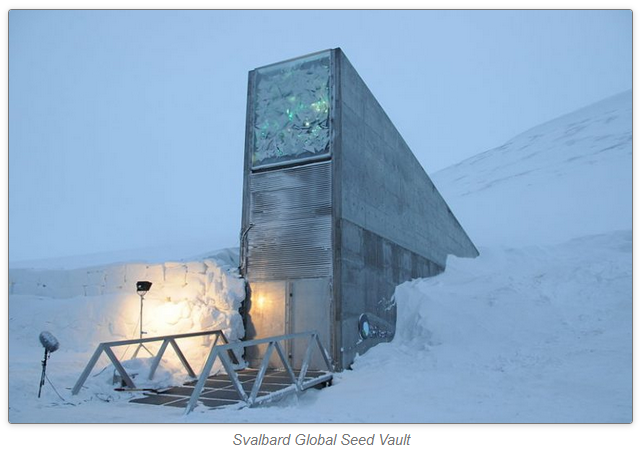

>как вы?
> хилимся, живём, работаем. настроение лучше с каждым днём!
>очень инетересно узнать что в данной ситуации значит 'работаем'
> это не такой публичный разговор
>ну это понятно
что значит работаем и что такое политическое или критически-активистское искусство в государстве, последний месяц гордо и не стесняясь длящем военное преступление? что такое культурная работа в стремительно то ли декоративно, то ли декоративно-чтобы-потом-на-самом-деле фашизирующемся государстве, на которое маргинально возлагать какие-либо надежды. про него непонятно, у кого больше будущего оно забрало: у нас или у себя. становится нормой не верить в будущее этого образования-как-бы-народа.
что значит делать искусство для конца света?
в фильме winter on fire есть кадры, как в напряжённом холодном ожидании во время обороны майдана девушка-подросток быстро и тревожно оказалась за стоящим у баррикад фортепиано цветов флага україни и отжаривает виртуозный этюд, по тональной и ритмиеческой плотности отсылающий куда-то сложно сказать, возможно в ранне-послевоенный академавангард. игра на баррикадах в этих кадрах выглядит очень важной. но важно и то, что эта персона скорее всего не занимается игрой весь день. но и мы не на баррикадах.
сегодня в институте физиологии обсуждалась биоэтическая проблема: допустимо ли жертвовать благополучием и жизнью немногих, чтобы спасти жизни потенциально неизвестных количеств персон в будущем? наверное нужно крепко верить в своё исследование чтобы так взвешивать. насколько важной окажется какая-то работа?
в блокадном ленинграде сотрудницы генетического семенного банка голодая защищали от голода горожан запасы культивированного биоразнообразия посевных культур. насколько помню, некоторые из них умерли от голода, вероятно думая о возможностях питания каких-то других людей, которые смогут снова засеять и размножить эти культуры когда кончится война. чтобы вернуть культуру на поля, достаточно хранить совсем небольшое количество семян.
в воздухе носятся мысли о том что в условиях уничтожения привычных форм протеста (и агитации), стоит искать новые и неожиданные. они важны не только потому что их намного сложнее заблокировать, даже важнее что они скорее не попадут в ловушку того же самого, ещё одной вражеской пропаганды.
скучную рекламу могут себе позволить только те, у кого много денег на массовое производство. пока видимые новые формы тяготеют к мимикрии листовок под объявления о пропаже собак, ценники, счета за жку...
искусство тоже говорит со мной только если не попадает в ловушку того же самого.
кажется мои проекты всегда были и продолжают быть развитием способов избегать говорить с людьми, с которыми мне страшно говорить.
честна ли я?
что такое политическое искусство? (если оно помогает избегать контакта?) или если постараться получше, что делает политическое искусство, или что как и кому можно таким способом сообщить? сообщить то есть подумать-побыть вместе
28_03_2022_0312